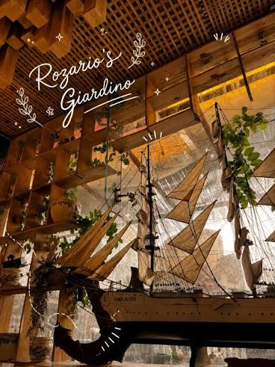
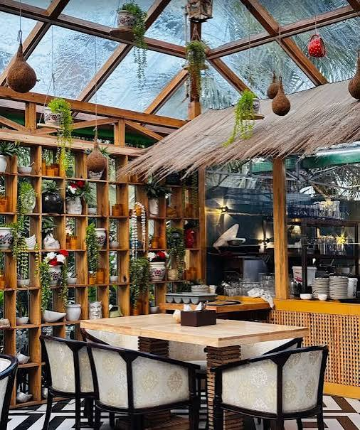
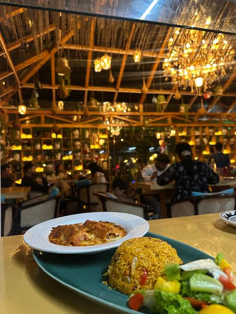
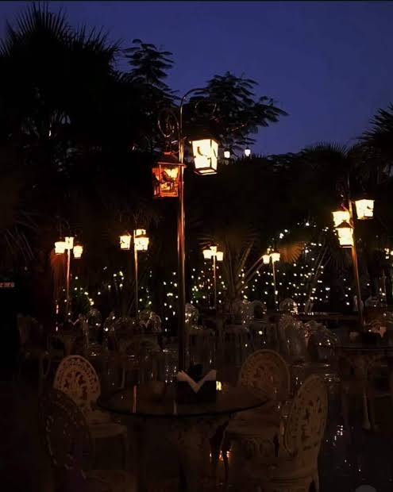
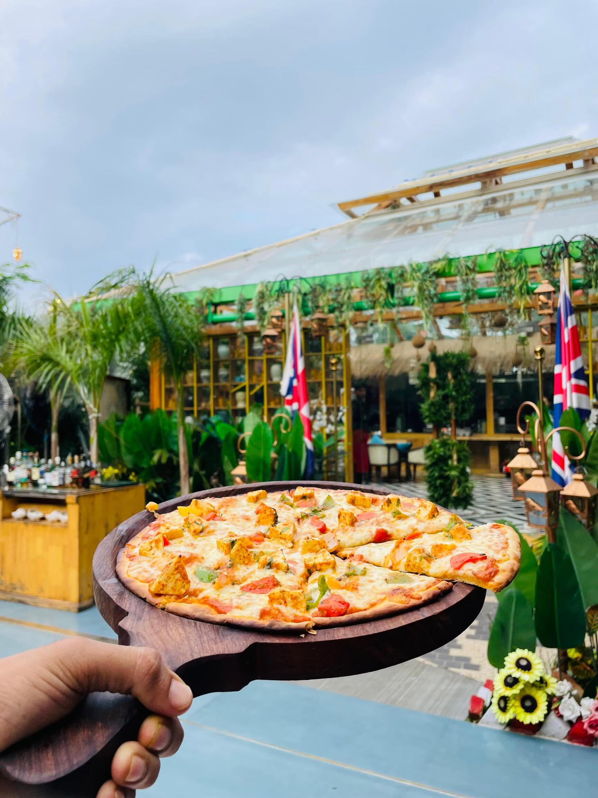
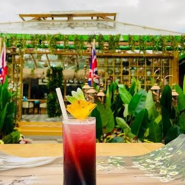

Where Every Conversation Blossoms in the Garden
Step into Kota’s premier Italian courtyard bistro. An oasis of serene greenery, slow-crafted specialty brews, stone-baked pizzas, and heartwarming acoustic evenings.

Designed for Calm, Crafted for Taste
Every corner of Rozario’s Giardino is intentionally designed to transport you from Kota’s bustling rhythm into a tranquil European glasshouse courtyard.

Lush Glasshouse Courtyard
Cascading botanicals, natural sunlight by afternoon, and glowing string lights by night create Kota's most romantic dining backdrop.

Artisanal Italian & Fusion
Hand-stretched gourmet pizzas, slow-simmered pastas tossed in extra virgin olive oil, and inventive continental small plates.

Twilight Live Acoustics
Unwind every weekend with intimate acoustic performances beneath the stars, accompanied by handcrafted mocktails and artisan coffee.
Taste the Giardino Signatures

Grilled Paneer Giardino Pizza
Tandoor-spiced cottage cheese cubes, sweet charred peppers, red onions, fresh basil, and bubbling mozzarella on crisp stone-baked dough.
Spaghetti Aglio E Olio Peperoncino
Al dente pasta tossed with golden sliced garlic, cold-pressed olive oil, cracked red pepper flakes, and fresh herbs, served with seasoned garden sides.

Giardino Botanical Sparkler
Refreshing layered tropical cooler infused with crushed mint, citrus, and sweet fruit nectar, served fresh in our sunlit courtyard pavilion.
Loved by Over 1,000+ Diners in Kota
"Easily the most aesthetic and peaceful cafe in Kota. The courtyard vibe is unmatched, and their Aglio E Olio pasta and Brownie Shake are hands down the best in town!"
"Located at Clarks Premier, it gives a complete luxury bistro feel. We celebrated my sister's birthday here, and the live music on Saturday evening made it truly unforgettable."
"The Grilled Paneer Pizza and Crostini are top quality. Great coffee, courteous staff, and very Instagrammable interiors. Highly recommended for couples and family dinners!"
Live From The Giardino
Follow our journey on Instagram @rozariosgiardino • Tag #RozariosGiardino to get featured
Join Us for an Unforgettable Culinary Retreat
Whether an intimate candle-lit dinner, a casual coffee catch-up, or a special celebration, we look forward to welcoming you.
An Italian Courtyard in the Heart of Kota
Born from a vision to create a botanical sanctuary where gastronomy, tranquility, and warm community intersect.
Escape the Ordinary, Embrace the Garden
In Italian, Giardino means garden—a space of flourishing life, soothing greenery, and relaxed gatherings. Rozario's Giardino was founded with a singular intent: to offer the people of Kota and travelers alike a refined European bistro experience, housed in the landmark Clarks Premier in Kunadi.
Every detail, from the iron-framed glasshouse architecture and sun-dappled courtyard flora to the aromas of slow-steeped Arabica espresso, has been curated to evoke the timeless charm of Mediterranean piazzas.
Whether you arrive for a leisurely afternoon latte, an intimate evening date under glowing fairy lights, or an acoustic weekend session with loved ones, our team welcomes you with genuine Rajasthani warmth infused with Italian elegance.
The Three Pillars of Rozario's Giardino
The guiding principles that shape every cup of coffee and every plate we serve.
Botanical Serenity
We believe surrounding oneself with living greenery nurtures peace of mind. Our al fresco glasshouse courtyard offers an airy, calm sanctuary shielded from the city's commotion.
Artisanal Craftsmanship
From our authentic slow-fermented pizza dough and San Marzano tomato sauces to our signature brownie fudge shakes, quality ingredients always come first without compromise.
Community & Music
Rozario's Giardino is a cultural crossroads. We host regular weekend acoustic sets, art gatherings, and birthday milestones that weave cherished memories for Kota's residents.
Step Into the Garden
Find our exact location at Clarks Premier, explore operating hours, and plan your visit or table reservation effortlessly.
Rozario's Giardino - Cafe
Clarks Premier, B12-13-14-15, Vishkarma Nagar, Kunadi, Electricity Board Area, Kota, Rajasthan 324001
Monday – Friday: 2:00 PM – 11:30 PM
Saturday – Sunday: 2:00 PM – 12:30 AM
Opens daily at 2:00 PMAl Fresco Courtyard • Air-Conditioned Glasshouse • Live Music on Weekends • High-Speed WiFi • Free Valet Parking
See How Diners Experience Giardino
Follow @rozariosgiardino on Instagram and share your stories with #RozariosGiardino